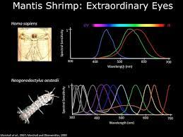

Fatos sobre o Stomatopoda
O que diabos é um stomatopoda?

De nome científico Odontodactylus scyllarus, o stomatopoda é um crustáceo da subclasse Hoplocarida, pertencente a classe Malacostraca, do filo Arthropodea do reino Animalia
Sua Visão de cores
Eles são o ser vivo que mais veem cores em todo reino animal, isso graças ao seu número absurdo de cones receptaculos de luz. Enquanto um humano comum tem 3 cones, esse animal de apenas 30 centimtros tem 16 cones de luz, vendo um número inimáginavel de cores diferentes.